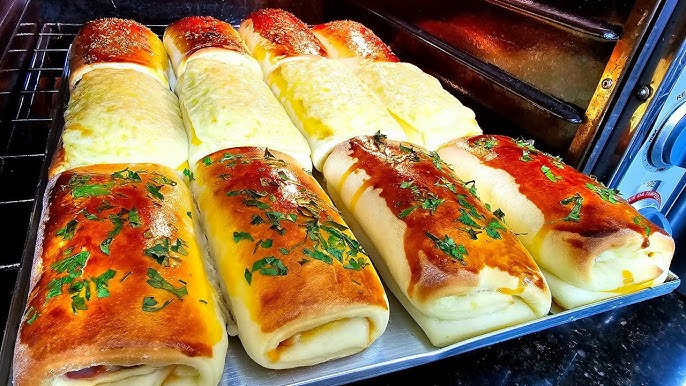

.png)
- Cafés
- Salgados
- Doces
O ambiente do Café do Sol é aconchegante e intimista, com uma decoração que mistura o rústico e o moderno. Móveis de madeira, iluminação suave e plantas espalhadas criam uma atmosfera acolhedora e tranquila, ideal para relaxar ou trabalhar. As grandes janelas deixam a luz natural entrar, proporcionando uma sensação de liberdade e bem-estar. Cada canto convida a um momento de pausa, seja para uma conversa descontraída ou para saborear uma bebida em silêncio.

Expresso Um clássico, com sabor intenso e encorpado. Perfeito para os amantes de um bom café.
Cappuccino Café expresso, leite vaporizado e uma camada de espuma, polvilhado com canela ou chocolate.
Latte Café expresso com bastante leite vaporizado, criando uma bebida suave e cremosa.
Mocha A combinação do café expresso com chocolate quente e leite vaporizado, finalizada com chantilly.
Café Filtrado Café suave e aromático, feito com grãos especiais para um sabor delicado e refrescante.
Chá de Ervas Uma seleção de chás calmantes e revitalizantes, com opções como camomila, hortelã e erva-doce.
Bolo de Chocolate Rico e úmido, com uma cobertura de ganache de chocolate. Ideal para acompanhar um café.
Torta de Limão Uma combinação de creme azedinho de limão com base crocante de biscoito, finalizada com chantilly.
Brigadeiro Gourmet Feito com leite condensado de qualidade e chocolate belga, uma explosão de sabor.
Cookie de Chocolate Crocante por fora e macio por dentro, com pedaços generosos de chocolate.
Pão de Mel Massa fofinha, coberta com chocolate, recheada com mel e especiarias, uma tradição irresistível.
Croissant de Presunto e Queijo Massa folhada e crocante, recheada com presunto e queijo derretido.

cafés especiais
.jpeg)
salgados deliciosos
docês finos